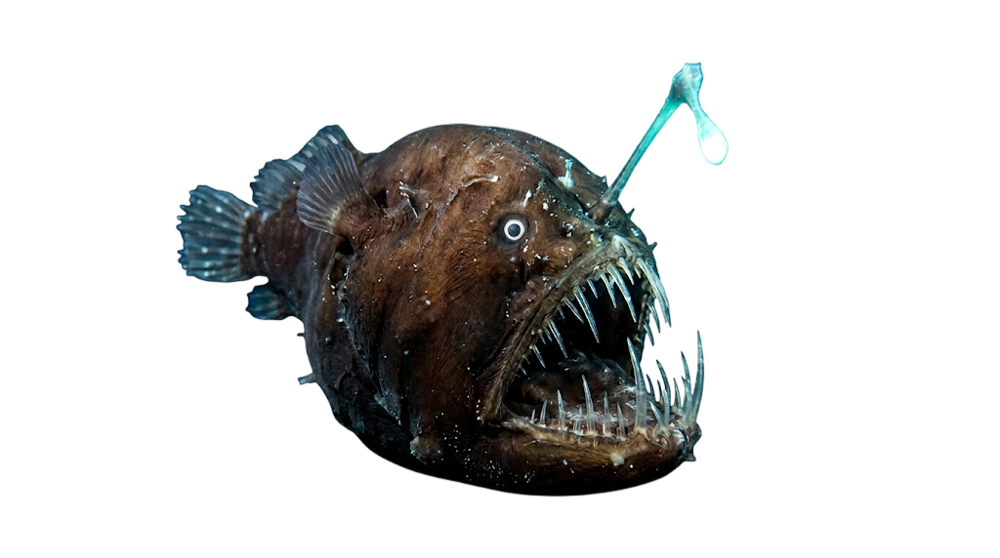
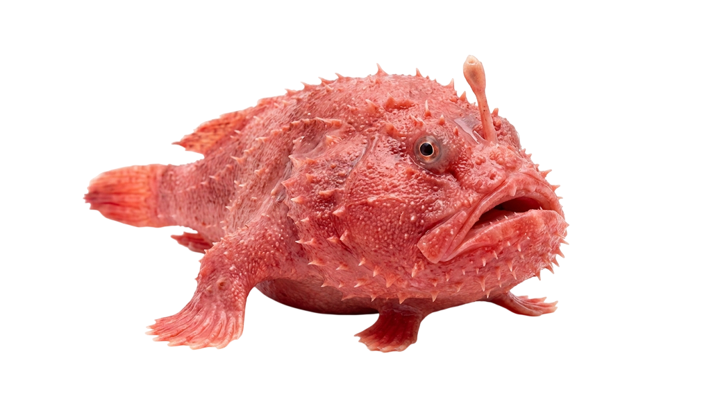
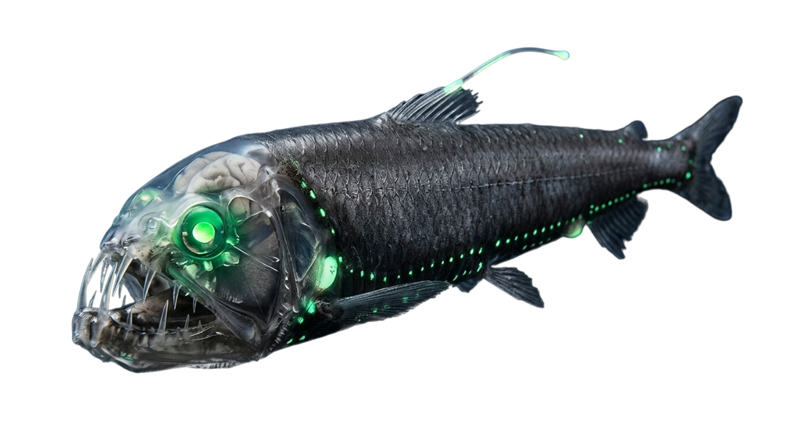

Deep Sea Creatures
Meet some of the most iconic animals that inhabit different layers of the ocean, from coastal giants to mysterious deep‑sea predators.

Anglerfish
A deep‑sea predator that uses a bioluminescent lure to attract prey in almost complete darkness.

Coffinfish
A slow bottom‑dweller that can inflate its body like a balloon to appear larger and deter predators.

Giant Tube Worm
Lives near hydrothermal vents and survives with symbiotic bacteria that turn chemicals into energy.

Barreleye Fish
Known for its transparent head and upward‑pointing eyes that detect faint silhouettes above.

Dumbo Octopus
Named for its ear‑like fins, it is one of the deepest‑living octopus species ever recorded.

Viperfish
A fierce mid‑water hunter with long, needle‑like teeth and a hinged lower jaw to snare prey.

White Shark
A powerful apex predator that patrols coastal and open waters, capable of making deep dives.

Blue Whale
The largest animal on Earth, feeding mainly on krill in the upper layers of the ocean.